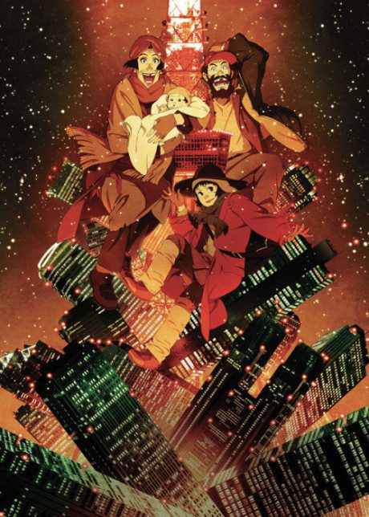

Tokyo Godfathers
東京ゴッドファーザーズ
An original anime, so there's no book to continue with.
8.1AniList score
—Animeter, no votes yet
1film
Is it worth watching?
The drop map is for series. Rate the film above to add to its Animeter score.